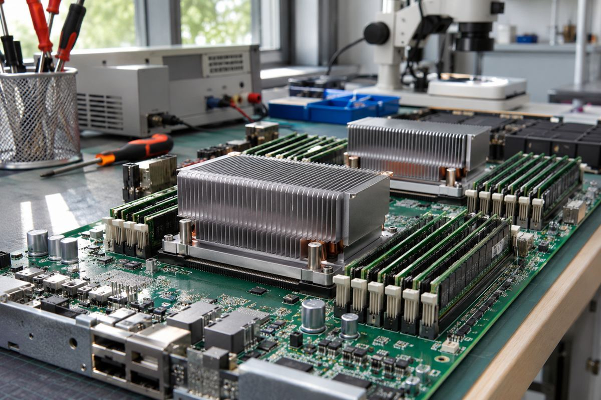

半導体 / EXPLAINED
AMDデータセンター売上97%増、ゲーム事業とは異なる動き
11月3日発表は9月26日終了四半期の結果。データセンター、PC、ゲームの需要を分けて読む。

AMDは11月3日、2026年第3四半期のデータセンター売上が約85億ドルで前年同期比97%増と発表した。一方、ゲームは40%減の7億7300万ドル。全社の記録的売上をPCやゲーム機全体の一様な成長とは読めない。対象は9月26日終了四半期で、発表日の1日の変化ではない。
同じ設計会社の異なる市場
AMDはサーバー用EPYC、AI用Instinct GPU、PC用Ryzenなどを設計する。CPUは全般的な処理を担い、GPUは多くの計算を並列で行う。ゲームとAIがGPUという名前を共有しても、顧客、環境、製品は違う。データセンターの注文増を民生用グラフィックスの販売増と同一視できない。
全社売上は133億7700万ドルで前年の92億4600万ドルから45%増。会社はEPYC需要とMI450系投入を成長要因に挙げる。Client and Gaming合計は約37億ドルで8%減だが、Client単体は約29億ドルで7%増。合計の減少をPCプロセッサーの減少と書くと、内部の逆方向の動きを見落とす。
売上と小売価格は別
ゲーム減収はセミカスタムとグラフィックスの減少によるという。セミカスタムは顧客の要求を反映したチップ設計事業だ。売上には数量だけでなく製品構成と単価が影響するため、40%減を利用者40%減とは換算できない。データセンター成長も韓国のPCやGPU価格を直接決めない。購入には実際の在庫、価格、性能資料が別途必要だ。
表にはGAAPと調整後non-GAAPがあり、営業利益は前者が約28億ドル、後者が約39億ドル。調整値は特定項目を除く補助指標で、名称なく混ぜると比較が曖昧になる。定義と調整項目をそろえることが先決だ。本稿は製品市場の解説で、株価評価ではない。
第4四半期売上予想は約170億ドル、幅±3%。未終了期間の会社予想で、達成済みではない。出荷、需要、供給で変化し得る。AIサーバー拡大と民生市場内の異なる動きが今回のポイントで、個別製品の発売や値引きは確定できない。全社成長率より、自分が買う機器に関係する条件が重要になる。